Chapter 4 Results
4.1 Crime Category and Demographic Analysis
We start our analysis of crime types by investigating what types of crimes occur in what frequencies. We bucketed the numerous crimes from the raw data into logical categories in the last chaptuer. Note that in the pre-processing stage, we removed a small “Other” category of parking violations and noise complaints.
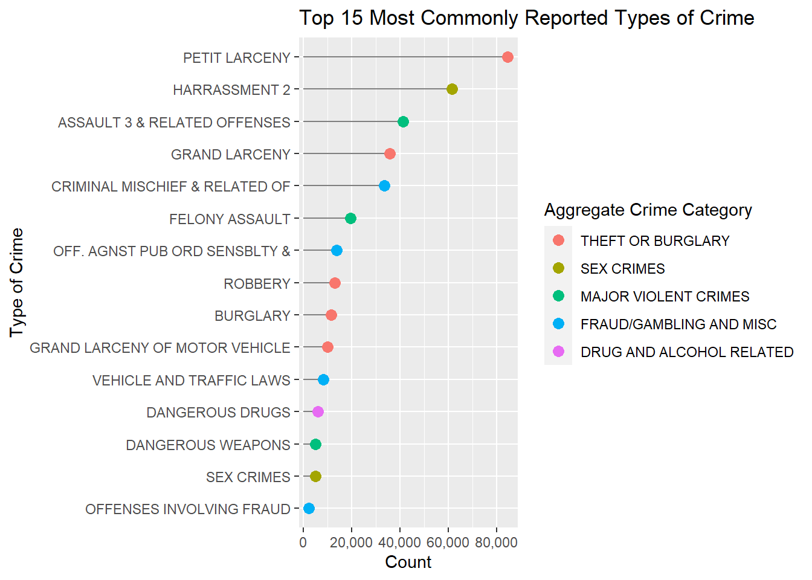
Here we can see the crime incident that has happened the most frequently is “Petit Larceny”, a form of larceny in which the value of the property taken is generally less than $50. We also observe that theft or burglary related crimes are the most common by far. This category is followed by sex crimes, violent crimes, and fraud/gambling related crimes all of which are relatively close in number. The lowest category by far is drug and alcohol related crimes, perhaps because the policing of these crimes has been relaxed over the last few years.
4.1.1 Crime by Borough
When one decides to attend Columbia University, one may ask themselves which borough should they live in depending on the relative safety of living in each borough. Therefore, following are the plots of count of total crimes and different types of crimes by the boroughs.
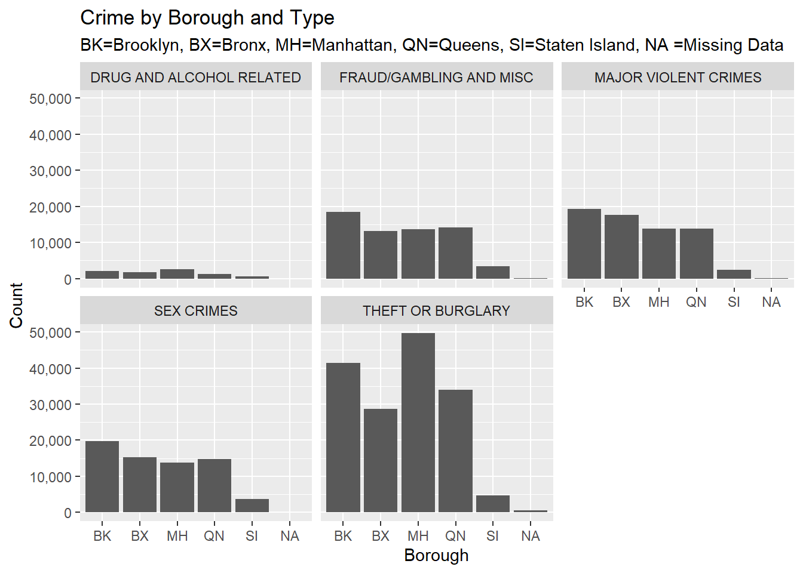
From these graphs, we note that with respect to overall crime, Brooklyn has the most crime followed by Manhattan. Secondly, it’s interesting to see that while Brooklyn has more crime of type “SEX CRIMES”, “MAJOR VIOLENT CRIMES”, AND “FRAUD/GAMBLING AND MISC” compared to Manhattan while Manhattan has more crime of type “THEFT OR BURGLARY” and “DRUG AND ALCOHOL RELATED” compared to Brooklyn.
Let us now take a look at other variables in the dataset. After some trial and error, the following yields some insights (looking at only crimes against individuals): 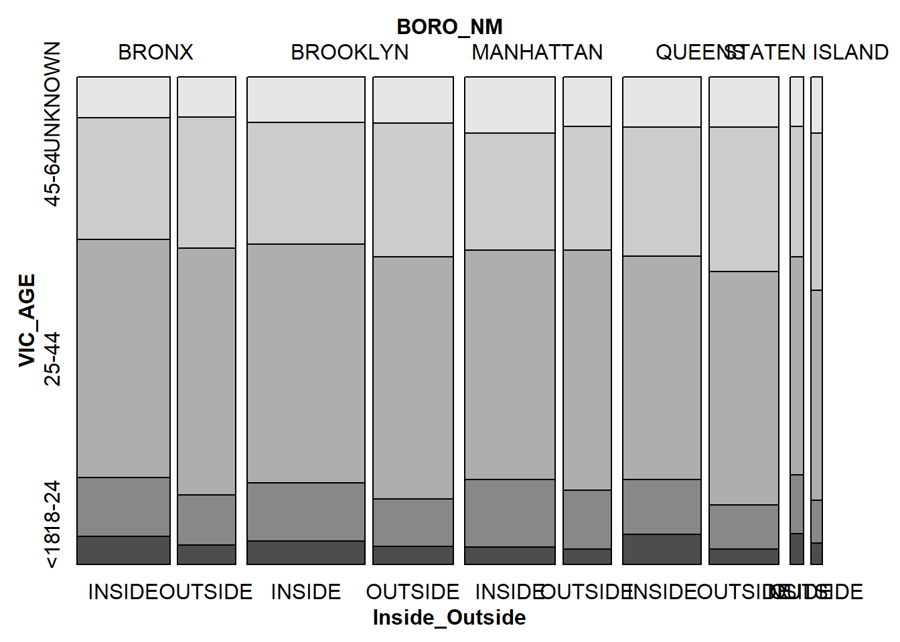
We see here that more crime occurs inside compared to outside (which aligns with the fact most crime is larceny/theft). What is interesting there does not seem to be a difference between age groups and boroughs and premise as the divisions are mostly even. Even accounting for uneven age groups in the raw data, it still seems like 25-44 is the largest category.
4.1.2 Race
We can dig further into demographics by looking into the race and gender of both the suspects and victims. Note - this is simply exploratory analysis of data that has been reported and categorized by the NYPD and care should be taken for any extrapolation that may be made.
Let us begin by diving into trends between the race of the suspects and victims. 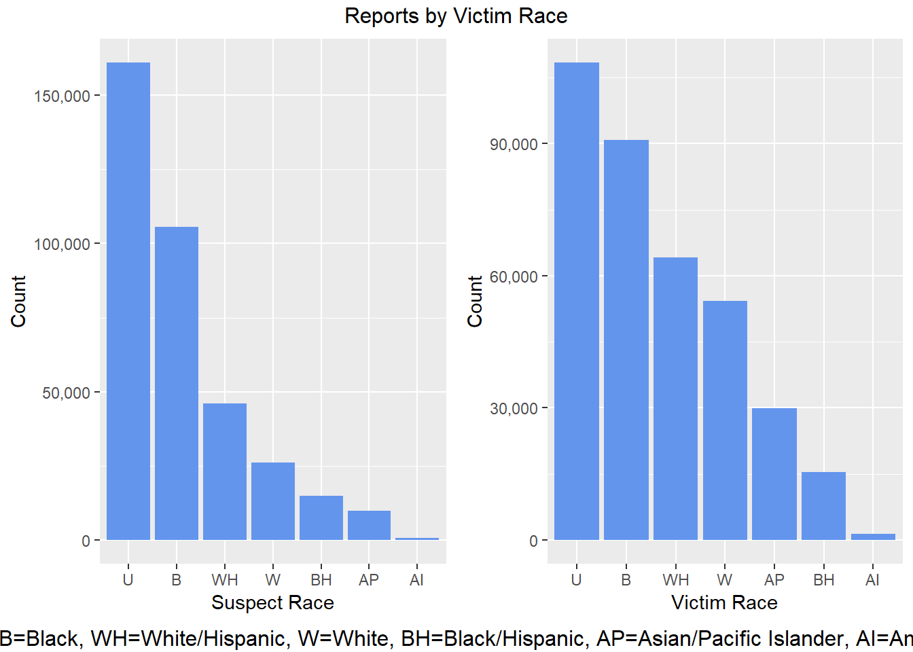
While there is a lot of null/unknown data, we would like to explore patterns between the race of the suspect and victim.
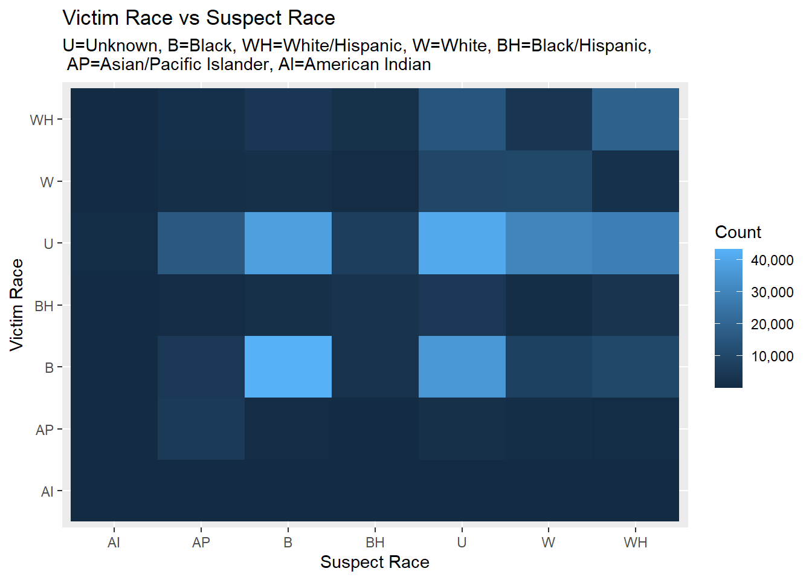
We see from the bar charts that most of the victims are Black and also that most of the suspects are Black. Logically, the intersection of these two fields is also the highest which is made evident in the heatmap. While this graph has its merits, demographically we know that there are much fewer people of say American Indian race than Black. It may also be worth looking at the proportion per suspect race in each horizontal victim race band to account for uneven data classes.
4.1.3 Gender
Next, lets do a gender focused analysis.
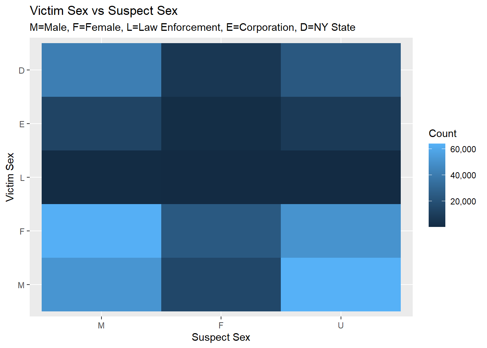
We see that most of the victims are female and most of the suspects are male although there is a large unknown category. It is concerning but would fit with the historical paradigm that most of the crime seems to be committed by men towards women.
4.2 Time Series Analysis
Per pre-processing, we are focusing on incidents reported in 2022. We can look at the overall trend during the year as of the publish date, after Q3 2022.
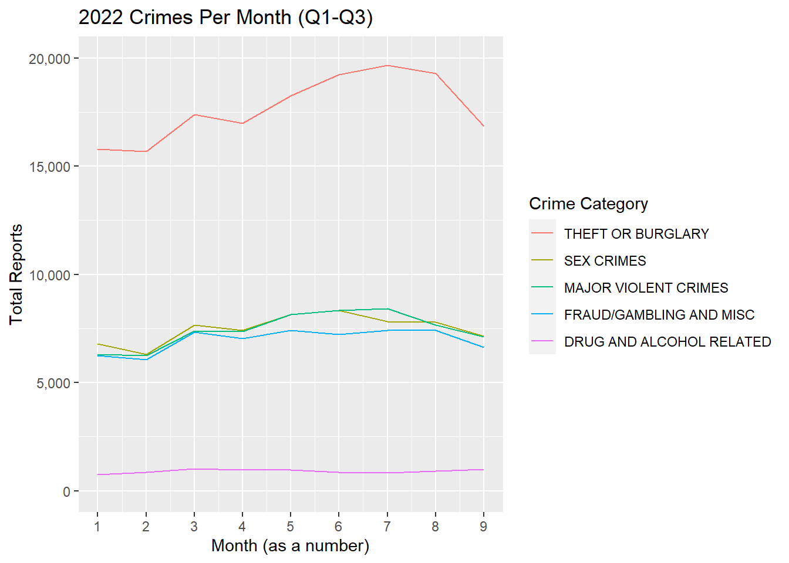
The overall trend is dominated by theft crimes since the volume is largest. It does seem like there is a hump over summer which may align to more human activity and thus more crime. Uniquely, there is a dip for drug crimes in the summer.
4.2.1 Day of Week
Let’s now look at some other time related charts. 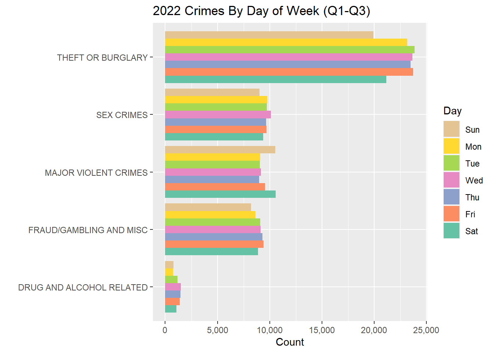
There are a few interesting trends here. For one, theft appears to be lower on weekends whereas violent crimes are the opposite. We also see that fraud/gambling ramps up over the week and peaks on Fridays. Sex crimes are highest on Wednesdays surprisingly.
4.2.2 Time of Day
Let’s also look at the time of the day: 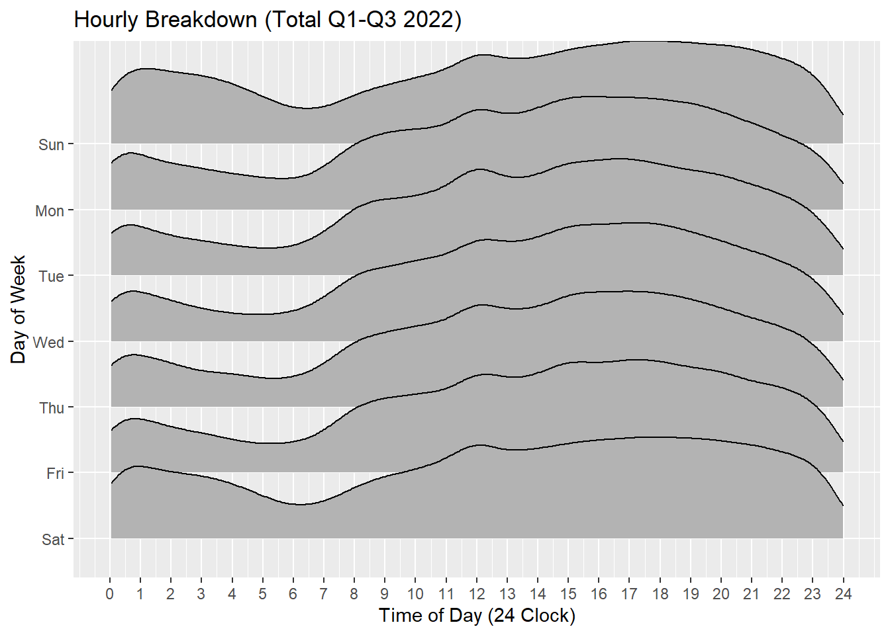
The raw data is rounded to the nearest minute but there is likely binning happening with time reported on the nearest hour. There appears to be a peak at 12:00pm (12 of 24) which is likely a data quality issue in that reports may default to that time when not specified exactly. This also happens as 12:00am (0 of 24) though it is harder to see due to how the ridge plot extrapolates at the boundary. That said, this graph shows that crimes seems to peak at night around 6pm. But is this related to individual crimes and in/around parks?
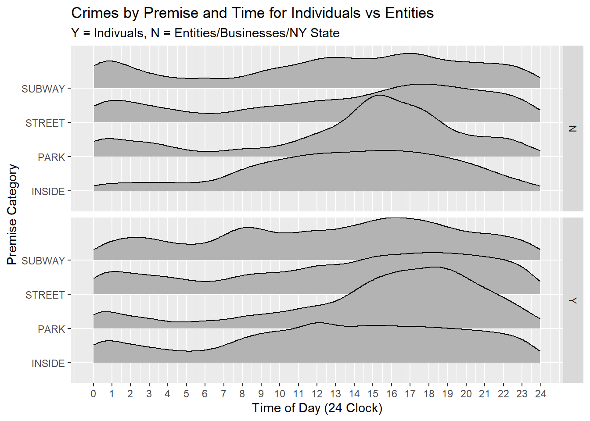
From prior charts, we know that the number of crimes is skewed toward those occurring in “Inside”. This does not represent the magnitude but we can see that for individuals, parks are more ‘dangerous’ at night - more so than other locations. However, it is somewhat comforting to know that this starts to drop off quickly after about 7-8pm.
4.3 Location Analysis
4.3.1 Spatial Distribution Around Columbia
Since a component of our research is to analyze how crime is spread out around Columbia University, a visual analysis of spatial distribution of all crime around Columbia is useful. The following is a map centered around Columbia University (CU) that shows where crime is distributed.
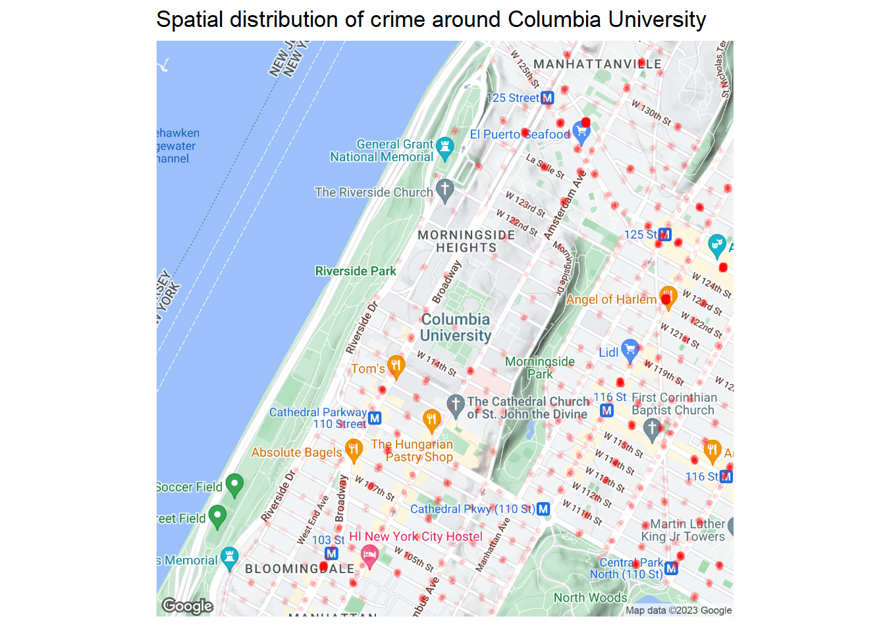
The above map is useful to see how geographical location of a crime is coded in the dataset - for example, all crimes happening on a particular street (or residences on a particular street) between two avenues is assigned to the lat-long coordinates of the center of that street (See W 111th St to W 124th St for instance).
Another thing this shows is around which subway station there is more crime. For example, out of the 2 125th st stations, the one on the right has noticeably more crime concentrated around it than the one on the left. Note that the way data is recorded, all crimes that happen inside a subway station are coded to the location of the subway station. So this result could also mean that one station is safer than the other.
This map could also be used to plan one’s route to and from Columbia depending if safety is a concern. For example, one could see which streets and avenues have less crime concentrated on them and so could indicate which routes are generally safer to travel on. Stay tuned for our interactive component that makes it easier for you to zoom in and out while planning your route!
4.3.2 Spatial Distribution Around Columbia by Crime Category
Following maps show the spatial distribution of crime around Columbia University by crime categories.
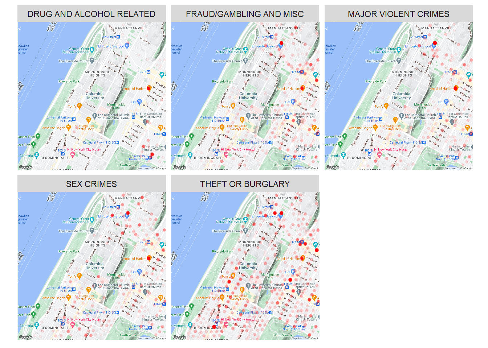
The above maps clearly show that the most prevalent kind of crime around Columbia University is “THEFT OR BURGLARY” and “DRUG AND ALCOHOL RELATED” crimes are the least prevalent. Another interesting pattern to note is that for the categories “SEX CRIMES”, “FRAUD/GAMBLING AND MISC”, and “MAJOR VIOLENT CRIMES”, the crime is concentrated most around 125th st.
4.3.3 Increasing Radius from Columbia
The following histogram was produced to check how the crime frequency increases with increasing radius away from school.
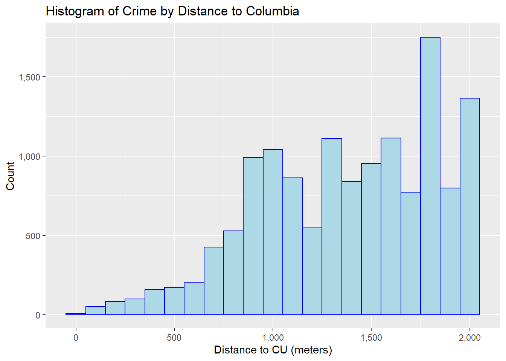
This graph shows that within each 100m radius (up to 2000m away from Columbia), the crime frequency increases. The explanation is that because the increase in area considered within each 100m bin increases polynomially (with the power of 2), it’s only natural that we see more crimes in buckets farther away from Columbia than those closer to columbia because the area considered within each bucket increases more than linearly. It is still interesting to note however that for some buckets the crime frequency goes down even though the area considered goes up. The next plots further investigate this issue using the concept of density of crime.
4.3.4 Cumulative Crime Near CU
The previous plot motivated us to try to confirm whether the crime frequency follows a quadratic relationship with respect to radius from Columbia University. Note that this would imply that crime scales linearly with the area considered.
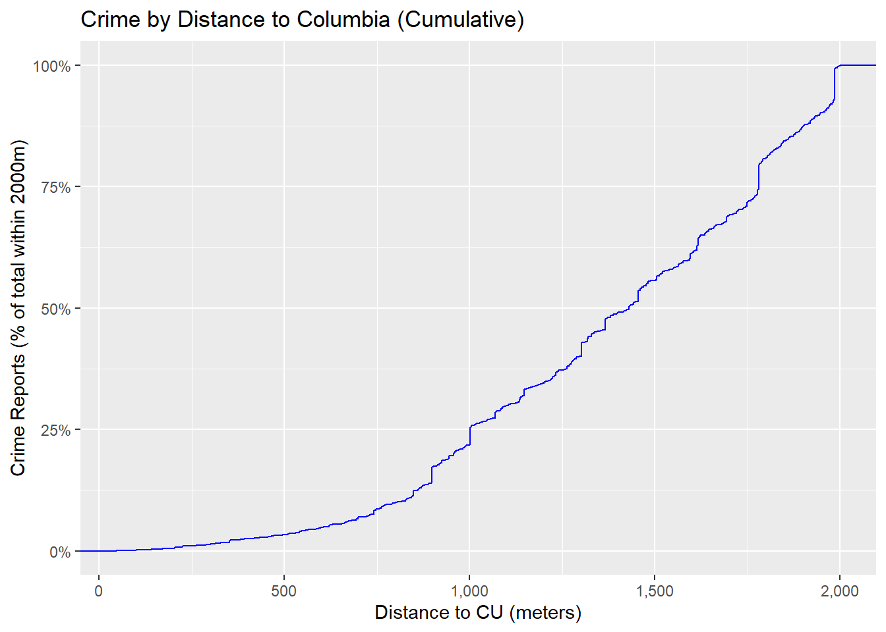
Note that the curve roughly follows the shape of the quadratic curve confirming that the crime does increase linearly with area and quadratically with the radius considered. So then, what explains the decline in crime frequency observed in some of the buckets in the previous histogram? (For instance, the bucket that shows the crime frequency to drop between 1100m and 1200m as compared to the bucket that shows the crime frequency within 1000m and 1100m). We further explore this issue in our next plots.
4.3.5 Crime Density
Since in the earlier histogram we saw that within some buckets the crime count was decreasing, we wanted to see how the density of crime changes as move away from Columbia generally and also specifically as we move from a bucket of 100m radius to the next bucket of the incremental 100m radius.
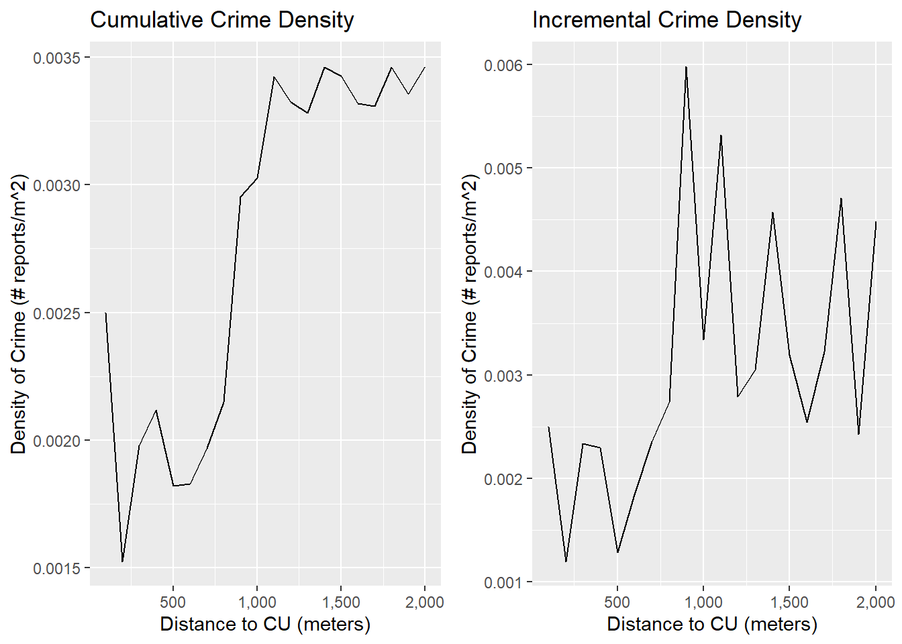
Note that the cumulative density plot shows that crime is less dense within 750m of Columbia after which it becomes more dense. Potential explanations are that there could be extra policing around the campus area, or an increase in crime density due to an increase in population density as we move beyond 750m from Columbia.
The incremental density plot shows the increase (or decrease) in density as we move from a bucket of 100m to radius to the bucket of next 100m radius around Columbia. Note that this graph also shows what the earlier histogram showed, i.e., for some buckets the density of crime goes down.
4.3.6 Deeper Dive of Crime Density
To finally see why we see buckets of incremental 100m radius away from Columbia with decreasing density of crime, we decided to plot these buckets visually on a google map of the area around Columbia overlapped with the spatial density of crime.
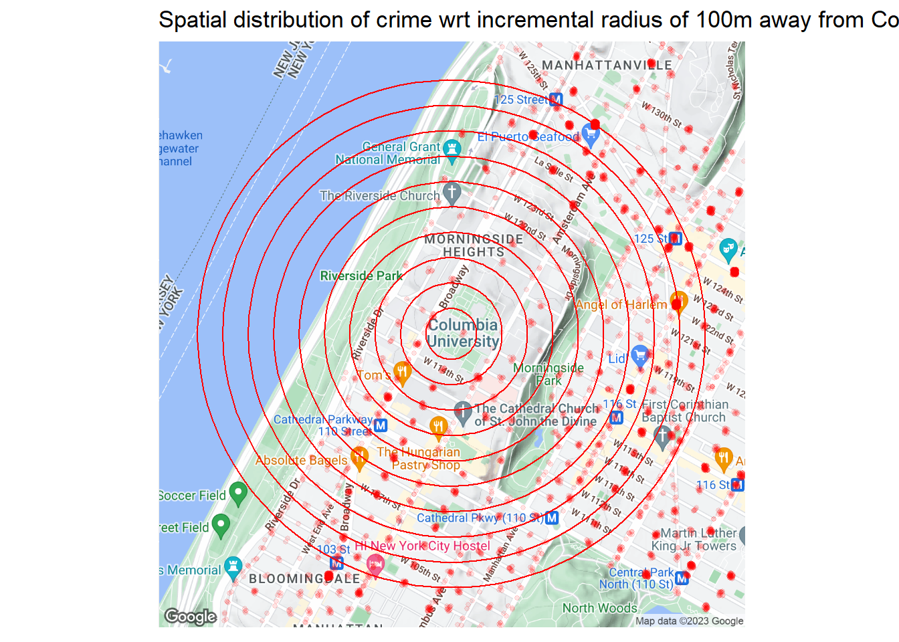
We speculate that we see up and down jumps in incremental crime density due to the following reasons:
While we increase the area in a circular fashion as we move away from Columbia, the lat/long coordinates of crime are recorded with the grid structure of Manhattan in mind. Therefore, some incremental radius/area buckets circles end up having way less crime reported if they contain parts of a park in them (since the crimes within parks are reported as happening on the streets outside the parks).
Another reason is that many crimes are just reported to the center of the streets (as discussed in the spatial distribution map earlier). What ends up happening is that some incremental radius/area buckets end up including a straight line of all these concentrated crimes which lead to their crime density shooting up- see for example the area between the third last and the second last circle that ends up having majority of the crimes reported on streets W 112th to W 120th.